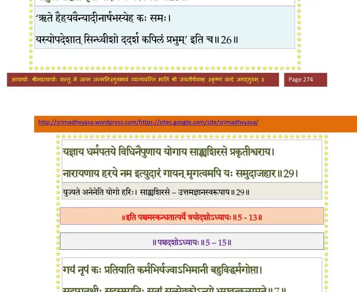

स्कन्ध 5 · अध्याय 13
श्लोक २
ब्राह्मण उवाच–
दुरत्ययेऽध्वन्यजया निवेशितो रजस्तमः सत्वविभक्तकर्मदृक् ।
स एष सार्थोऽर्थपरः परिभ्रमन् भवाटवीं याति न शर्म विन्दति।।१
यस्यामिमे षण्णरदेव दस्यवः स्वार्थं विलुम्पन्ति कुनायकं बलात् ।
गोमायवो यत्र हरन्ति सार्थकं प्रमत्तमाविश्य यथोरणं वृकाः।। २ ।।
दुरत्ययेऽध्वन्यजया निवेशितो रजस्तमः सत्वविभक्तकर्मदृक् ।
स एष सार्थोऽर्थपरः परिभ्रमन् भवाटवीं याति न शर्म विन्दति।।१
यस्यामिमे षण्णरदेव दस्यवः स्वार्थं विलुम्पन्ति कुनायकं बलात् ।
गोमायवो यत्र हरन्ति सार्थकं प्रमत्तमाविश्य यथोरणं वृकाः।। २ ।।
श्लोक ३
प्रभूतवीरुत्तृणगुल्मगह्वरे कठोरदंशैर्मशकैरुपद्रुतः ।
क्वचिच्च गन्धर्वपुरं प्रपश्यति क्वचित्क्वचिच्चासुहरोल्मुकं ग्रहम्।। ३ ।।
क्वचिच्च गन्धर्वपुरं प्रपश्यति क्वचित्क्वचिच्चासुहरोल्मुकं ग्रहम्।। ३ ।।
श्लोक ४
निवासतोयद्रविणात्मबुद्धिस्ततस्ततो धावति भो अटव्याम् ।
क्वचिच्च वात्योत्थितपांसुधूम्रा दिशो न जानाति रजस्वलाक्षः।। ४ ।।
क्वचिच्च वात्योत्थितपांसुधूम्रा दिशो न जानाति रजस्वलाक्षः।। ४ ।।
श्लोक ५
अदृश्यझिल्लीस्वनकर्णमूलः उलूकवाग्भिर्व्यथितान्तरात्मा ।
अपुण्यवृक्षान् श्रयते क्षुधार्दितो मरीचितोयान्यभिधावति क्वचित्।।५।।
अपुण्यवृक्षान् श्रयते क्षुधार्दितो मरीचितोयान्यभिधावति क्वचित्।।५।।
श्लोक ६
क्वचिद्वितोयाः सरितोऽभियाति परस्परं खादयते निरन्नः ।
आसाद्य दावं क्वचिदग्नितप्तो निर्विद्यते क्व च यक्षैर्हृतासुः।। ६ ।।
आसाद्य दावं क्वचिदग्नितप्तो निर्विद्यते क्व च यक्षैर्हृतासुः।। ६ ।।
श्लोक ७
परैर्त्हृतस्वः क्व च निर्विण्णचित्तः शोचन्विमुह्यन्नुपयाति कश्मलम् ।
क्वचिच्च गन्धर्वपुरं प्रविष्टः प्रमोदते निर्वृतवन्मुहूर्तम्।। ७ ।।
क्वचिच्च गन्धर्वपुरं प्रविष्टः प्रमोदते निर्वृतवन्मुहूर्तम्।। ७ ।।
श्लोक ८
चलन्क्वचित्कण्टकशर्करांघ्रिर्नगारुरुक्षुर्विमना इवास्ते ।
पदे पदेऽभ्यन्तरवह्निनाऽर्दितः कौटुम्बिकः क्रुध्यति वै जनाय।। ८ ।।
पदे पदेऽभ्यन्तरवह्निनाऽर्दितः कौटुम्बिकः क्रुध्यति वै जनाय।। ८ ।।
श्लोक ९
क्वचिन्निगीर्णोऽजगराहिना जनो नावैति किञ्चिद्विपिनेऽपविद्धः ।
दष्टः स्म शेते क्व च दन्दशूकैरन्धोऽन्धकूपे पतितस्तमिस्रे।। ९ ।।
दष्टः स्म शेते क्व च दन्दशूकैरन्धोऽन्धकूपे पतितस्तमिस्रे।। ९ ।।
श्लोक १०
कर्हिस्मचित्क्षुद्ररसान्विचिन्वस्तन्मक्षिकाभिर्मथितो विमानः ।
तत्रापि कृच्छ्रात्प्रतिलब्धमन्ये बलाद्विलुम्पन्त्यथ तं ततोऽन्ये।।१०।।
तत्रापि कृच्छ्रात्प्रतिलब्धमन्ये बलाद्विलुम्पन्त्यथ तं ततोऽन्ये।।१०।।
श्लोक ११
क्वचिच्च शीतातपवातवर्षप्रतिक्रियां कर्तुमनीश आस्ते ।
क्वचिन्मिथोविपणन्यच्च किञ्चिद्विक्रेयमृच्छत्युत वित्तशाठ्यात्।। ११ ।।
क्वचिन्मिथोविपणन्यच्च किञ्चिद्विक्रेयमृच्छत्युत वित्तशाठ्यात्।। ११ ।।
श्लोक १२
क्वचित्क्वचित्क्षीणधनस्तु तस्मिन् शय्यासनस्थानविहारहीनः ।
यावत्परादप्रतिलब्धकामः पारक्यदृष्टिर्लभतेऽवमानम्।। १२ ।।
यावत्परादप्रतिलब्धकामः पारक्यदृष्टिर्लभतेऽवमानम्।। १२ ।।
श्लोक १३
प्रसज्जति क्वापि लताभुजाश्रयस्तदाऽऽश्रयोऽव्यक्तपदं द्विजस्य ह ।
क्वचित्कदाचिद्धरिचक्रतस्त्रसन् सख्यं विधत्ते बककङ्कगृध्रैः।। १३ ।।
क्वचित्कदाचिद्धरिचक्रतस्त्रसन् सख्यं विधत्ते बककङ्कगृध्रैः।। १३ ।।
श्लोक १४
तैर्वञ्चितो हंसकुलं समाविशन्न रोचयञ्च्छीलमुपैति वानरम् ।
तज्जातिरासेन सुनिर्वृतेन्द्रियः परस्परान्वीक्षणविस्मृतावधिः।। १४ ।।
तज्जातिरासेन सुनिर्वृतेन्द्रियः परस्परान्वीक्षणविस्मृतावधिः।। १४ ।।
श्लोक १७
द्रुमेषु रंस्यन् सुतदारवत्सलो व्यवायदीनो विवशश्चरन्वने ।
क्वचित्प्रमादाद्गिरिकन्दरे पतन् वल्लीं गृहीत्वा गजभीत आस्थितः।।१५
ततः कथञ्चित्प्रतिमुक्त आपदः पुनश्च सार्थं प्रविशत्यरिन्दम ।
अध्वन्यमुष्मिन्नजया निवेशितो भ्रमञ्जनोऽद्यापि न वेद कश्चन ।।१६
अन्योन्यवित्तव्यतिषङ्गवृद्धवैरानुबन्धोऽधिवहन्मिथश्च ।
अध्वन्यमुष्मिन्नुरुकृच्छ्रवित्तबाधोपसर्गैर्विहरन्विपन्नः।। १७ ।।
क्वचित्प्रमादाद्गिरिकन्दरे पतन् वल्लीं गृहीत्वा गजभीत आस्थितः।।१५
ततः कथञ्चित्प्रतिमुक्त आपदः पुनश्च सार्थं प्रविशत्यरिन्दम ।
अध्वन्यमुष्मिन्नजया निवेशितो भ्रमञ्जनोऽद्यापि न वेद कश्चन ।।१६
अन्योन्यवित्तव्यतिषङ्गवृद्धवैरानुबन्धोऽधिवहन्मिथश्च ।
अध्वन्यमुष्मिन्नुरुकृच्छ्रवित्तबाधोपसर्गैर्विहरन्विपन्नः।। १७ ।।
श्लोक १८
तांस्तान्विपन्नान् स हि तत्र तत्र विहाय जातं परिगृह्य सार्थः ।
आवर्ततेऽद्यापि न कश्चिदत्र वीराध्वनः पारमुपैति योगम्।। १८ ।।
आवर्ततेऽद्यापि न कश्चिदत्र वीराध्वनः पारमुपैति योगम्।। १८ ।।
श्लोक २०
मनस्विनो निर्जितदिग्गजेन्द्रा ममेति सर्वे भुवि बद्धवैराः ।
मृधे शयीरन्न तु तद्व्रजन्ति यन्न्यस्तदण्डो गतवैरोऽभियाति।। १९
रहूगण त्वमपि ह्यध्वनोऽस्य सन्न्यस्तदण्डः कृतभूतमैत्रः ।
असज्जितात्मा हरिसेवयाऽशितज्ञानासिमादाय तरातिपारम्।। २० ।।
मृधे शयीरन्न तु तद्व्रजन्ति यन्न्यस्तदण्डो गतवैरोऽभियाति।। १९
रहूगण त्वमपि ह्यध्वनोऽस्य सन्न्यस्तदण्डः कृतभूतमैत्रः ।
असज्जितात्मा हरिसेवयाऽशितज्ञानासिमादाय तरातिपारम्।। २० ।।
श्लोक २२
राजोवाच–
अहो नृजन्माखिलजन्मशोभनं किं जन्मभिस्त्वपरैरप्यमुष्मिन् ।
न यद्धृषीकेशयशः कृतात्मनां महात्मानां वः प्रचुरः समागमः।।२१
न ह्यद्भुतं त्वच्चरणाब्जरेणुभिर्हतांहसो भक्तिरधोक्षजेऽमला ।
मौहूर्तिकाद्यस्य समागमाच्च मे दुस्तर्कमूलोऽपहतोऽविवेकः।। २२ ।।
अहो नृजन्माखिलजन्मशोभनं किं जन्मभिस्त्वपरैरप्यमुष्मिन् ।
न यद्धृषीकेशयशः कृतात्मनां महात्मानां वः प्रचुरः समागमः।।२१
न ह्यद्भुतं त्वच्चरणाब्जरेणुभिर्हतांहसो भक्तिरधोक्षजेऽमला ।
मौहूर्तिकाद्यस्य समागमाच्च मे दुस्तर्कमूलोऽपहतोऽविवेकः।। २२ ।।
श्लोक २३
नमो महद्भ्योऽस्तु नमः शिशुभ्यो नमो युवभ्यो नम आवटुभ्यः ।
ये ब्राह्मणा गामवधूतलिङ्गाश्चरन्ति तेभ्यः शिवमस्तु राज्ञाम्।।२३।।
ये ब्राह्मणा गामवधूतलिङ्गाश्चरन्ति तेभ्यः शिवमस्तु राज्ञाम्।।२३।।
श्लोक २४
श्रीशुक उवाच–
इत्येवमुत्तरामातः स वै ब्रह्मर्षिसुतः सिन्धुपतेः परमात्मसत्तत्त्वम-विगणितपरमानुभावः परमकारुणिकतयोपदिश्य रहूगणेन सकरुण-मभिवन्दितचरणकमलः पूर्णार्णव इव निभृतकरणोर्म्याशयो धरणीमिमां विचचार ।। २४ ।।
इत्येवमुत्तरामातः स वै ब्रह्मर्षिसुतः सिन्धुपतेः परमात्मसत्तत्त्वम-विगणितपरमानुभावः परमकारुणिकतयोपदिश्य रहूगणेन सकरुण-मभिवन्दितचरणकमलः पूर्णार्णव इव निभृतकरणोर्म्याशयो धरणीमिमां विचचार ।। २४ ।।
श्लोक २५
सौवीरपतिरपि सुजनसमवगतपरमात्मसत्तत्वः आत्मन्यविद्याध्यारोपितां च देहात्ममतिं विससर्ज एवं नृप भगवदाश्रितानुभावः । तस्येमान् श्लोकान् गायन्ति ।। २५ ।।
श्लोक २६
आर्षभस्येह राजर्षेर्मनसाऽपि महात्मनः ।
नानुवर्त्मार्हति नृपो मक्षिकेव गरुत्मतः।। २६ ।।
नानुवर्त्मार्हति नृपो मक्षिकेव गरुत्मतः।। २६ ।।
भागवततात्पर्यनिर्णय

श्लोक २७
यो दुस्त्यजान् दारसुतान् सुहृद्राज्यं हृदि स्पृशम् ।
जहौ युवैव मलवदुत्तमश्लोकलालसः।। २७ ।।
जहौ युवैव मलवदुत्तमश्लोकलालसः।। २७ ।।
श्लोक २८
यो दुस्त्यजान् क्षितिसुतस्वजनार्थदारान् प्रार्थ्यां श्रियं सुरवरैः सदयावलोकैः ।
नैच्छन्नृपस्तदुचितं महतां मधुद्विट्सेवानुरक्तमनसामभवोऽपि फल्गुः।। २८ ।।
नैच्छन्नृपस्तदुचितं महतां मधुद्विट्सेवानुरक्तमनसामभवोऽपि फल्गुः।। २८ ।।
श्लोक २९
यज्ञाय धर्मपतये विधिनैपुणाय योगाय साङ्ख्यशिरसे प्रकृतीश्वराय ।
नारायणाय हरये नम इत्युदारं गायन्मृगत्वमपि यः समुदाजहार ।। २९ ।।
नारायणाय हरये नम इत्युदारं गायन्मृगत्वमपि यः समुदाजहार ।। २९ ।।
श्लोक ३०
इदं भागवतसभाजितावदातगुणकर्मणो राजर्षेर्भरतस्यानुचरितं स्वस्त्ययन-मायुष्यं धन्यं यशस्यं स्वर्ग्यमापवर्ग्यं चानुशृृणोत्याख्यास्यत्यभिनन्दति च सर्वा ह्येवाशिष आत्मत आशास्ते न काश्चन परत इति ।। ३० ।।
।। इति श्रीमद्भागवते पञ्चमस्कन्धे त्रयोदशोऽध्यायः ।।